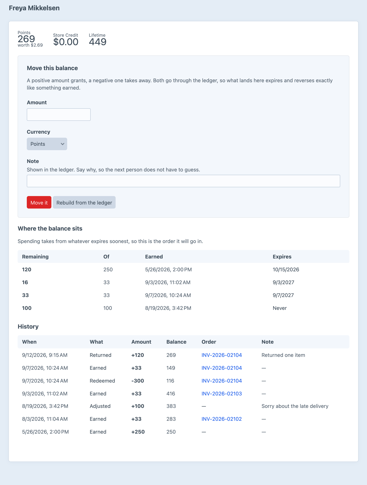
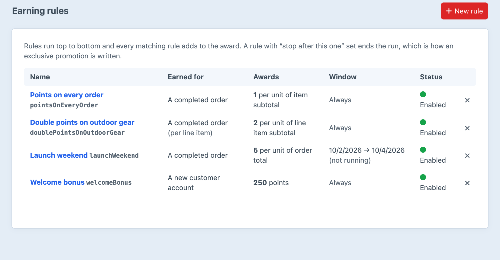

Loyalty points and store credit,
on a ledger that adds up.
Nobody types a balance in. Every credit is a lot with its own expiry, and a balance is what those lots have left.
| Remaining | Of | Earned | Expires |
|---|---|---|---|
| 120 | 250 | Welcome bonus | 15 Oct 2026Spent first |
| 16 | 33 | Order INV-2026-02103 | 3 Sep 2027 |
| 33 | 33 | Order INV-2026-02104 | 7 Sep 2027 |
| 100 | 100 | Late-delivery apology | Never |
A spend records which lots it took from. A refund puts the value back into those lots, with their original expiry dates.
Where the balance sits, in the order a spend will take it, and every movement that put it there.

Redeeming stores what the customer asked for. Each recalculation turns that request into a discount capped at the live cart, and points only leave the balance when the order completes.
Rules run top to bottom and stack. Double points on a category, a launch weekend, a welcome bonus.
